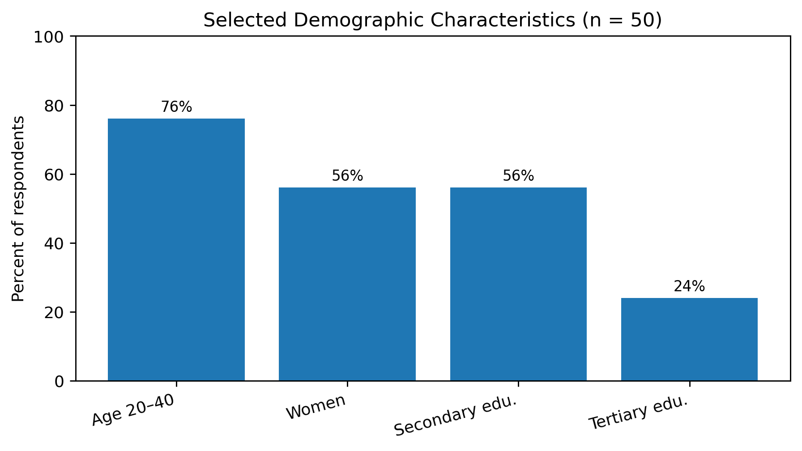

PIONEER PUBLICATION · ACCEPTED ARTICLE · ORIGINAL RESEARCH ARTICLE · SETEHEM: ENTREPRENEURSHIP & MANAGEMENT × HUMANITIES & SOCIAL SCIENCES
Event Decoration as a Source of Household Income Sustainability in Garkawa, Plateau State, Nigeria: A Descriptive Survey
Lydia Kachollom AKILA¹*
¹Department of Home and Rural Economics, Plateau State College of Agriculture, Garkawa, Plateau State, Nigeria
Corresponding author: lydiaakila1@gmail.com
Article | Volume/Issue | Published | ISSN | DOI |
|---|---|---|---|---|
e002 | 1(1) | July 2026 | Pending assignment | Pending registration |
Abstract
Background: Event decoration is an increasingly visible creative-service microenterprise in Nigeria and can diversify household livelihoods through income generated from weddings, birthdays, corporate functions, religious events and other ceremonies. Purpose: This study examined the demographic profile, service portfolio, income contribution and operating constraints of practising event decorators in Garkawa, Plateau State, Nigeria. Methods: A descriptive cross-sectional survey was conducted among 50 practising event decorators using a structured questionnaire. Data were analysed with frequencies, percentages and arithmetic means. Results: Seventy-six percent of respondents were aged 20–40 years, 56% were women, 56% had secondary education and 24% had tertiary education. Mean reported income from event decoration was ₦35,000 per month, equivalent to ₦420,000 annually, and represented an average of 45% of total household income. Wedding decoration was offered by 90% of respondents and was perceived as the most profitable service category. Major constraints were cost and access to materials/equipment, price competition, mismatch between client expectations and budgets, transport difficulties and infrastructure limitations. Conclusion: Event decoration constitutes a meaningful source of supplementary household income in Garkawa and offers a practical pathway for creative entrepreneurship and livelihood diversification. Enterprise outcomes can be strengthened through improved costing, record keeping, equipment access, digital marketing, cooperative asset sharing and targeted business-development support.
Keywords: event decoration; creative entrepreneurship; household income diversification; microenterprise; sustainable livelihoods; informal economy; women entrepreneurship; Plateau State, Nigeria
1. Introduction
Micro and small enterprises are central to household livelihoods and local economic activity in Nigeria. The 2017 national MSME survey reported more than 41.5 million micro, small and medium enterprises, with microenterprises accounting for the overwhelming majority of establishments (National Bureau of Statistics & Small and Medium Enterprises Development Agency of Nigeria [NBS & SMEDAN], 2017). Such enterprises create income opportunities close to where people live, but their sustainability is often constrained by limited finance, weak record keeping, irregular market demand, infrastructure gaps and limited access to business-development services.
Event decoration occupies a practical space within the creative and personal-services economy. The business combines design, craft skill, inventory management, sourcing, transport, installation, customer communication and post-event recovery. Typical markets include weddings, birthdays, religious ceremonies, corporate functions and community events. Entry can occur with modest capital relative to some production enterprises, but financial performance depends on pricing discipline, equipment ownership, transport efficiency, client management, demand seasonality and the ability to differentiate services.
The enterprise also has relevance for inclusive local development. Women represented 56% of the respondents in this study, making gender-sensitive enterprise support particularly important. The International Labour Organization (2022) identifies persistent barriers affecting women entrepreneurs in Nigeria, including access to finance, formalisation and business-development services. At the firm level, evidence from developing-country micro and small enterprises indicates that basic management practices such as marketing, stock control, record keeping and financial planning are associated with better performance and survival (McKenzie & Woodruff, 2017). These issues provide a useful lens for examining event decoration not merely as an artistic activity but as a livelihood enterprise.
1.1 Problem statement
National enterprise statistics provide limited insight into how creative-service activities such as event decoration contribute to household income in smaller communities. In Garkawa, event decoration is visible in social, religious and community events, yet there is little documented evidence on who operates these businesses, how much income they generate, which services dominate demand and what constraints limit growth. Without such evidence, vocational training, cooperative support and local enterprise programmes may not be adequately targeted to the needs of decorators.
1.2 Aim and objectives
The study aimed to assess event decoration as a source of household income sustainability among practising decorators in Garkawa, Plateau State. Specifically, it sought to:
describe the age, gender and educational characteristics of the event decorators surveyed;
determine the reported monthly income from event decoration and its contribution to total household income;
identify the principal decoration services offered and their perceived relative profitability; and
examine the major operating constraints affecting income generation and enterprise growth.
1.3 Research questions
1. What are the demographic characteristics of event decorators in Garkawa?
2. What income do respondents report from event decoration, and what proportion of household income does it represent?
3. Which event-decoration services are most commonly offered and perceived as most profitable?
4. What constraints limit income generation and business growth among event decorators?
2. Literature Review and Analytical Perspective
2.1 Creative microenterprise and household livelihoods
Households in developing economies frequently combine multiple income sources to reduce vulnerability to seasonal, labour-market and agricultural shocks. The World Bank (2015) highlights the importance of expanding productive employment and self-employment opportunities in Nigeria. Creative microenterprises such as event decoration can contribute to this diversification because they transform design and practical skills into marketable services with relatively flexible entry arrangements.
For household sustainability, however, gross revenue alone is insufficient. Enterprise income must be considered alongside materials, labour, transport, equipment replacement, storage, breakage and other operating costs. A decorator who prices only visible materials may generate cash turnover without generating adequate profit. Sustainable contribution therefore depends on both market demand and basic enterprise-management capability.
2.2 Women, informality and enterprise support
Women-led microenterprises often operate within a combination of household responsibilities, informal finance and local market networks. The ILO (2022) notes structural constraints affecting women’s entrepreneurship in Nigeria, including limited access to finance and business-development support. Because women constituted a majority of the surveyed decorators, practical interventions such as equipment leasing, cooperative purchasing, digital promotion and flexible business training are especially relevant.
2.3 Business practices and enterprise sustainability
McKenzie and Woodruff (2017) show that better business practices are associated with stronger performance among small firms in developing countries. For event decorators, comparable practices include maintaining job-cost sheets, separating household and business cash, taking deposits, using written service specifications, tracking inventory loss, keeping customer records, reviewing completed jobs and pricing labour and transport explicitly. These practices connect creative skill to sustainable enterprise performance.
2.4 Analytical framework
The study interprets household-income contribution as the outcome of an interaction among entrepreneur characteristics, service portfolio, enterprise-management practices and the operating environment. Demand opportunities generate bookings, while costs, competition, infrastructure and client-budget constraints shape the amount of income ultimately retained by the household. The descriptive survey therefore focuses on demographic characteristics, reported income, services offered and operating constraints as complementary dimensions of local livelihood participation.
3. Materials and Methods
3.1 Study design and setting
A descriptive cross-sectional survey design was used to examine event decoration and household income among practising decorators in Garkawa, a community in Mikang Local Government Area of Plateau State, Nigeria. The design was appropriate for describing respondent characteristics, enterprise activities, income indicators and constraints at the time of the survey.
3.2 Participants and sampling
The study involved 50 practising event decorators in Garkawa. Participants were selected using the study’s random sampling procedure. Eligibility was based on active involvement in event-decoration services within the study area. The unit of analysis was the individual decorator/enterprise operator.
3.3 Instrument and data collection
Data were collected with a structured self-administered questionnaire covering age, gender, educational attainment, reported monthly income from decoration, estimated contribution of decoration to total household income, services offered, perceived profitability and operating constraints. The instrument was administered to the sampled decorators and responses were compiled for descriptive analysis.
3.4 Measures and operational definitions
Variable | Operational measure | Scale |
|---|---|---|
Monthly decoration income | Respondent-reported average monthly income generated from event-decoration activities. | Nigerian naira (₦) |
Annualised decoration income | Monthly mean multiplied by 12 to provide a comparable annual figure. | Nigerian naira (₦) |
Household income contribution | Respondent estimate of the share of total household income attributable to event decoration. | Percent (%) |
Service portfolio | Types of decoration services offered by each respondent. | Multiple response |
Perceived profitability | Respondent assessment of relative profitability by service category. | High / Medium / Varied |
Operating constraints | Reported business, market, logistics and infrastructure difficulties. | Descriptive themes |
Table 1. Core study variables and operational measures.
3.5 Data analysis
Categorical variables were summarised using frequencies and percentages. Mean values were used for reported income indicators. The annual income figure was calculated as twelve times the reported mean monthly income. Service-offering percentages were treated as multiple-response measures and therefore were not expected to sum to 100%. The study was descriptive; interpretation focuses on the surveyed group and does not make causal claims.
3.6 Ethical considerations
The study involved adult business operators and minimal-risk questionnaire data. Participation was voluntary, informed consent was obtained, confidentiality was respected and results were reported in aggregate. No personally identifying participant information is presented in this article.
4. Results
4.1 Participant characteristics
Characteristic | Category | n | % |
|---|---|---|---|
Age | 20–30 years | 20 | 40 |
31–40 years | 18 | 36 | |
41–50 years | 8 | 16 | |
Above 50 years | 4 | 8 | |
Gender | Men | 22 | 44 |
Women | 28 | 56 | |
Education | No formal education | 2 | 4 |
Primary education | 8 | 16 | |
Secondary education | 28 | 56 | |
Tertiary education | 12 | 24 |
Table 2. Demographic profile of surveyed event decorators (n = 50). Percentages sum within each characteristic.
The sample was relatively young: 76% of respondents were between 20 and 40 years of age. Women constituted 56% of the sample. Educational attainment was concentrated at secondary level (56%), while 24% reported tertiary education. These characteristics indicate that event decoration in the study area attracted economically active adults with varied formal educational backgrounds.

Figure 1. Selected demographic characteristics of surveyed event decorators (n = 50).
4.2 Income contribution to household livelihoods
Indicator | Reported value |
|---|---|
Mean monthly income from event decoration | ₦35,000 |
Calculated mean annual income | ₦420,000 |
Mean contribution to total household income | 45% |
Table 3. Reported event-decoration income indicators.
Respondents reported a mean monthly income of ₦35,000 from event decoration. Annualising the monthly mean gives ₦420,000 per year. On average, respondents estimated that event decoration accounted for 45% of total household income. The result shows that decoration was economically meaningful within the surveyed households, while also indicating that most households relied on additional income sources.
4.3 Service portfolio and perceived profitability
Service category | Respondents offering service (%) | Perceived relative profitability |
|---|---|---|
Wedding decoration | 90 | High |
Birthday decoration | 70 | Medium |
Corporate-event decoration | 50 | Medium |
Religious-event decoration | 40 | Medium |
Other specialised services | 10 | Varied |
Table 4. Services offered and perceived relative profitability. Respondents could offer more than one service.
Wedding decoration was the dominant service, offered by 90% of respondents and perceived as the most profitable category. Birthday decoration was offered by 70%, corporate-event decoration by 50% and religious-event decoration by 40%. Only 10% reported other specialised services. The pattern suggests that weddings form the commercial core of the local decoration market, while birthday and corporate work provide important diversification.

Figure 2. Service portfolio of surveyed event decorators (n = 50).
4.4 Operating constraints
Constraint domain | Observed business effect | Enterprise response |
|---|---|---|
Materials, props and equipment | Limited access to reusable props, decoration materials and equipment; rising acquisition or replacement costs. | Cooperative purchasing, equipment leasing, inventory pooling and planned replacement. |
Price competition | Strong competition, including pressure from low-price or informal operators. | Differentiate service quality, use transparent packages and maintain cost-based pricing. |
Client-budget mismatch | Client expectations sometimes exceeded agreed or affordable budgets. | Written scope, deposits, change-order rules and clear package specifications. |
Transport and infrastructure | Movement of bulky materials, electricity limitations and local infrastructure increased operating difficulty. | Shared logistics, route planning, storage solutions and appropriate backup power where needed. |
Table 5. Principal constraints reported by event decorators and corresponding enterprise-management responses.
The constraints show that income sustainability depends on more than creative skill. Decorators must manage capital equipment, logistics, pricing and client relationships alongside design work. The combination of equipment cost and price competition can compress margins, while transport and infrastructure difficulties increase the cost of delivering services across locations.
5. Discussion
5.1 Event decoration as a supplementary livelihood
The reported mean contribution of 45% to household income indicates that event decoration was a substantial livelihood activity for the surveyed respondents. At the same time, the figure suggests income diversification rather than complete dependence on one enterprise. This pattern is consistent with the broader role of microenterprise in Nigerian households, where self-employment is often combined with farming, trading, wage work or other small businesses (World Bank, 2015; NBS & SMEDAN, 2017).
5.2 Market concentration and diversification
Wedding decoration dominated the local service portfolio. This concentration can be commercially advantageous because weddings are often high-visibility events with strong demand for decorative services. However, dependence on one service category can expose operators to seasonal demand and price competition. Birthday, corporate and religious-event services offer diversification opportunities that can help smooth cash flow across the year.
5.3 Gender and inclusive entrepreneurship
Women formed a modest majority of respondents. This finding makes enterprise support for women especially relevant in the study area. The ILO (2022) identifies finance, formalisation and business-development support as continuing constraints for women entrepreneurs in Nigeria. Local interventions should therefore emphasise practical access to productive assets, bookkeeping, digital promotion, safe transport and market networks rather than training alone.
5.4 Enterprise-management capability
The reported constraints reinforce the importance of business-management practices. Equipment acquisition, job costing, deposits, inventory control, transport planning and written service specifications directly affect profitability. This aligns with McKenzie and Woodruff (2017), who found that stronger business practices are associated with better small-firm performance. For decorators, professionalisation therefore requires both creative competence and disciplined enterprise management.
6. Practical and Policy Implications
Decorators should use full-cost pricing that includes materials, labour, transport, equipment depreciation, breakage, storage and post-event recovery.
Service packages should clearly specify scope, colours, quantities, installation time, deposits, change orders and cancellation conditions.
Cooperative equipment libraries, group purchasing and leasing arrangements can reduce capital barriers for small operators.
Vocational and enterprise-development programmes should combine decoration techniques with bookkeeping, digital portfolios, social-media marketing, customer communication and occupational safety.
Local support programmes should evaluate business survival, income stability, number of jobs completed and employment created, rather than relying only on training attendance.
7. Limitations
The study is a single-community cross-sectional survey with a modest sample of 50 decorators. Income was self-reported and annual income was derived from the monthly mean rather than from audited business records. Event demand may vary by season, and perceived profitability was not calculated from complete revenue-and-cost accounts. The results therefore describe the surveyed decorators and should be generalised beyond Garkawa with appropriate caution. Future studies can improve precision through repeated seasonal measurement, larger multi-community samples and verified business records.
8. Conclusion and Recommendations
Event decoration is a meaningful creative microenterprise and source of supplementary household income among the decorators surveyed in Garkawa. Participants reported a mean monthly decoration income of ₦35,000, equivalent to ₦420,000 annually, and an average contribution of 45% to household income. Weddings were the dominant and perceived most profitable service category. The major obstacles were material and equipment costs, competition, client-budget mismatch, transport and infrastructure limitations.
The study demonstrates the practical importance of connecting creative skill development with enterprise management. To strengthen livelihood outcomes, decorators and support institutions should prioritise cost-based pricing, record keeping, equipment access, cooperative asset sharing, digital marketing, service diversification and customer-contract practices. Future research should extend the evidence base through larger samples, repeated seasonal observations and detailed measurement of revenue, cost, profit and household income dynamics.
Declarations
Declaration | Statement |
|---|---|
Ethics and consent | The study involved adult event decorators. Participation was voluntary, informed consent was obtained, confidentiality was maintained and results were reported in aggregate. |
Funding | No external funding was declared for the study. |
Competing interests | The author declares no competing interests. |
Data availability | The de-identified research data supporting the reported aggregate results are retained with the study record and may be made available on reasonable request subject to institutional and participant-privacy requirements. |
Author contribution | Lydia Kachollom Akila is the sole author and contributed to conceptualisation, investigation, data collection, analysis, interpretation, manuscript preparation and final approval. |
Peer review | The article underwent double-blind peer review and was accepted for the CHIATECH JOURNAL Pioneer Publication, Volume 1, Issue 1, July 2026. |
Copyright and licence | © 2026 The author. Published open access under the Creative Commons Attribution 4.0 International (CC BY 4.0) licence. |
Table 6. Publication declarations.
References
International Labour Organization. (2022). National assessment of women’s entrepreneurship development in Nigeria: Summary of findings. ILO report
McKenzie, D., & Woodruff, C. (2017). Business practices in small firms in developing countries. Management Science, 63(9), 2967–2981. doi:10.1287/mnsc.2016.2492
National Bureau of Statistics, & Small and Medium Enterprises Development Agency of Nigeria. (2017). National survey of micro, small and medium enterprises (MSMEs), 2017. NBS/SMEDAN report
World Bank. (2015). More, and more productive, jobs for Nigeria: A profile of work and workers. doi:10.1596/23962
Publication Record
How to cite: Akila, L. K. (2026). Event decoration as a source of household income sustainability in Garkawa, Plateau State, Nigeria: A descriptive survey. CHIATECH JOURNAL, 1(1), e002. DOI pending. |
|---|